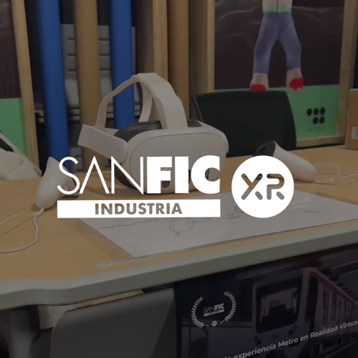
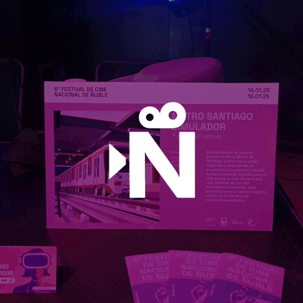
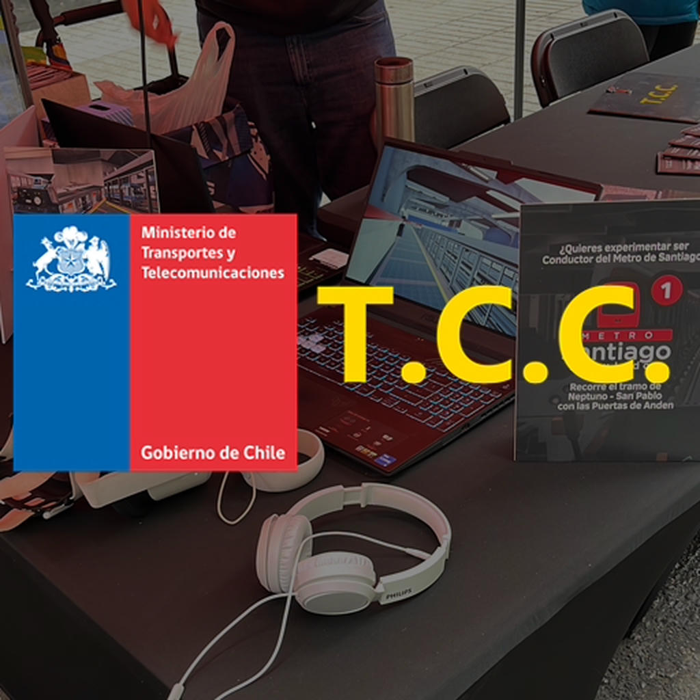
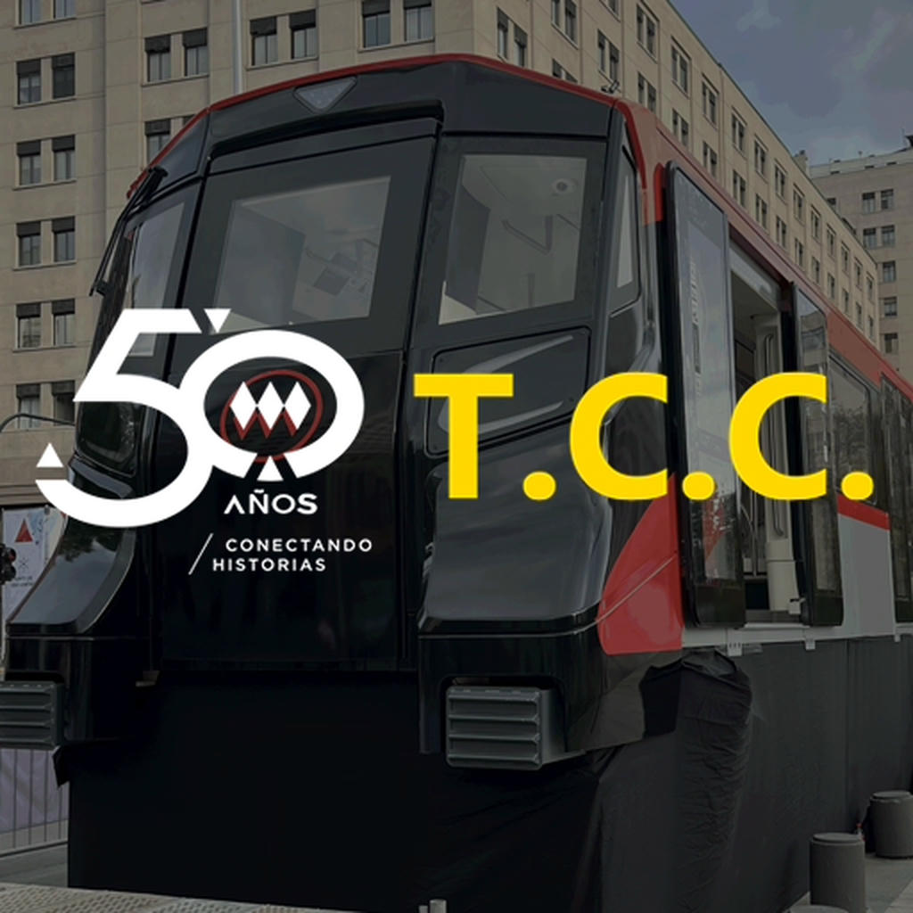
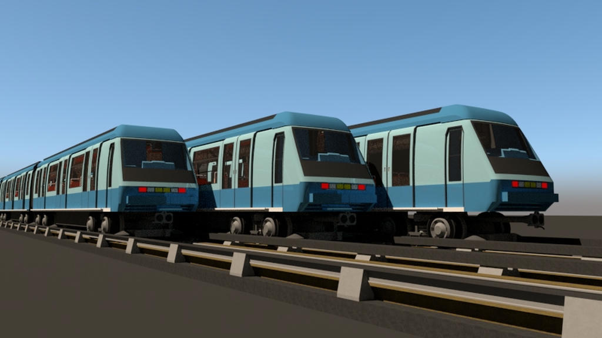
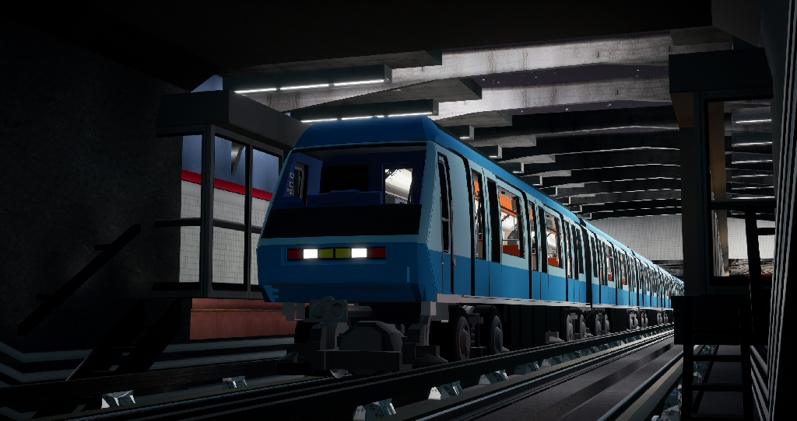

Proyecto Principal
Ver más
Metro Santiago Simulador
El simulador principal para PC.
Plataforma de simulación de conducción, investigación y preservación digital del sistema ferroviario metropolitano.
El simulador principal para PC.

Opera el metro de manera inmersiva en Realidad Virtual.

Simulador móvil y web accesible para todos.

Exploramos, analizamos y aportamos al conocimiento.
Completado
En desarrollo
En desarrollo
En desarrollo
En desarrollo
No iniciado
Actualmente se encuentran completados los sistemas de conducción, infraestructura principal y gran parte del material rodante. El desarrollo continúa en las áreas de señalización e interfaces visuales con miras al lanzamiento Early Access.

Exhibición del proyecto en la sección "Semillero de nuevas realidades" del Festival de Cine de Santiago, SANFIC 2024.

Exhibición del proyecto en la sección "Sala de Realidad Virtual y Nuevos Medios" de la edición 6° del Festival de Cine Nacional de Ñuble, 2025.

Exhibición del proyecto en el marco del Día Nacional Sin Auto, Gestionado por Transport Community Chile y el Ministerio de Transporte y Telecomunicaciones de Chile, 2025.

Exhibición del proyecto en el marco del Día Nacional Sin Auto, Gestionado por Transport Community Chile y Metro de Santiago, 2025.


El simulador principal llegará a las tiendas digitales con una experiencia completa y en constante evolución.
Siempre abierto a nuevas ideas, proyectos y colaboraciones que impulsen Metro Santiago Simulador.
contacto@metrosantiagosim.cl